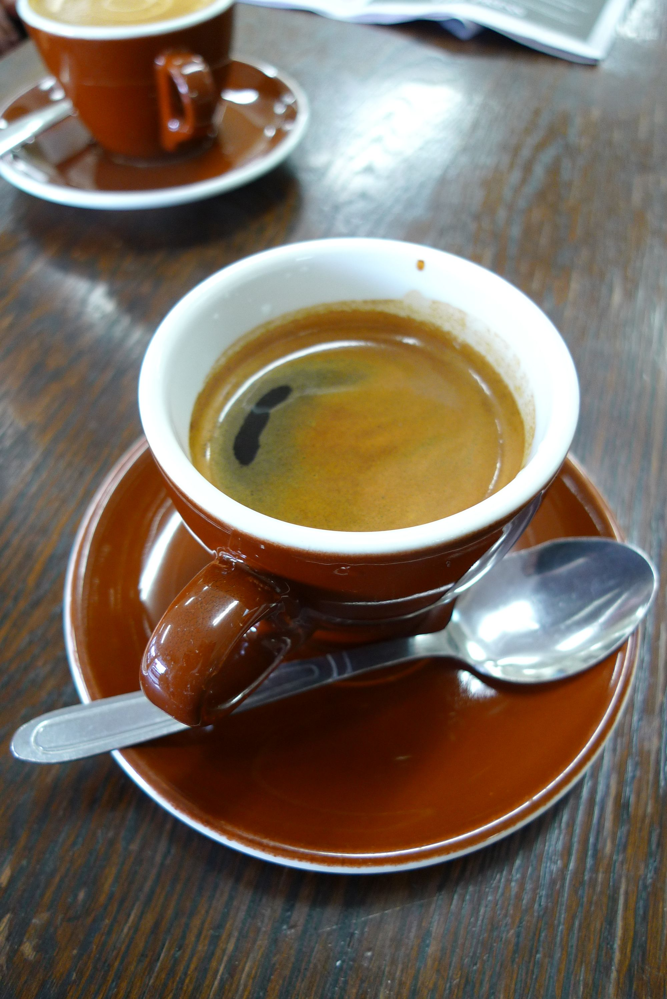

| Espresso |
A strong coffee brewed by forcing hot water through finely ground
coffee beans. It is typically served in a small cup or shot glass and has a rich, intense flavor and aroma. |
 |
| Americano |
A type of coffee that is made by adding hot water to a shot of espresso. The resulting drink is
similar in strength to drip coffee but has a more complex flavor profile due to the use of espresso as the base. |
 |
| Iced Coffee |
A cold coffee drink that is made by brewing coffee using either hot or cold water and then serving
it over ice. It can be served black or with milk and sugar, and can be flavored with syrups or other additives. |
 |